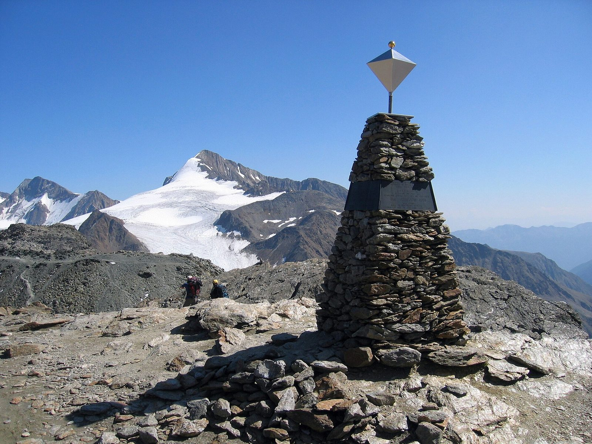
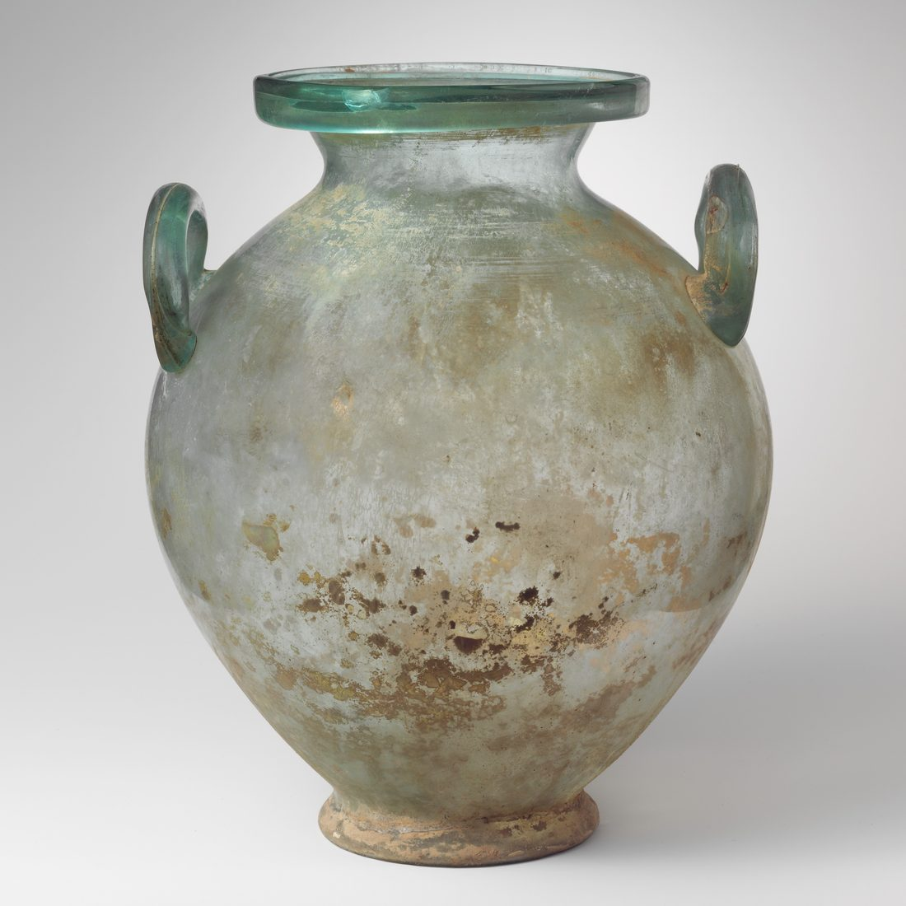
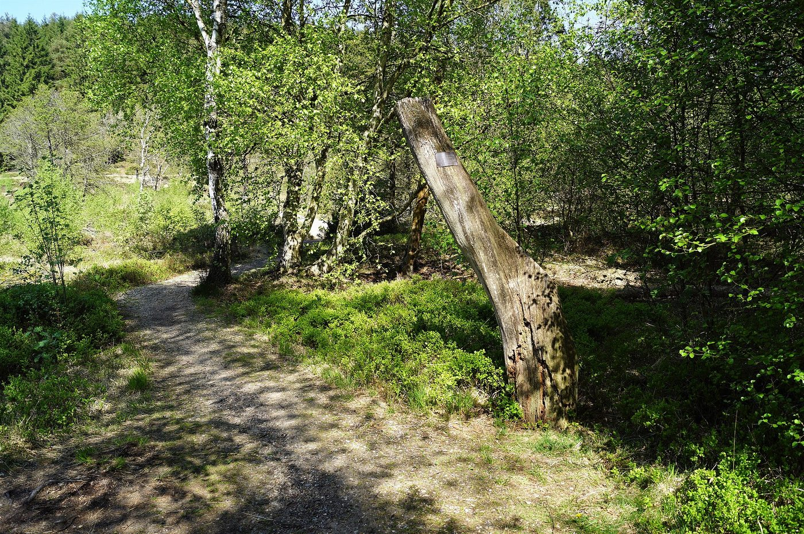
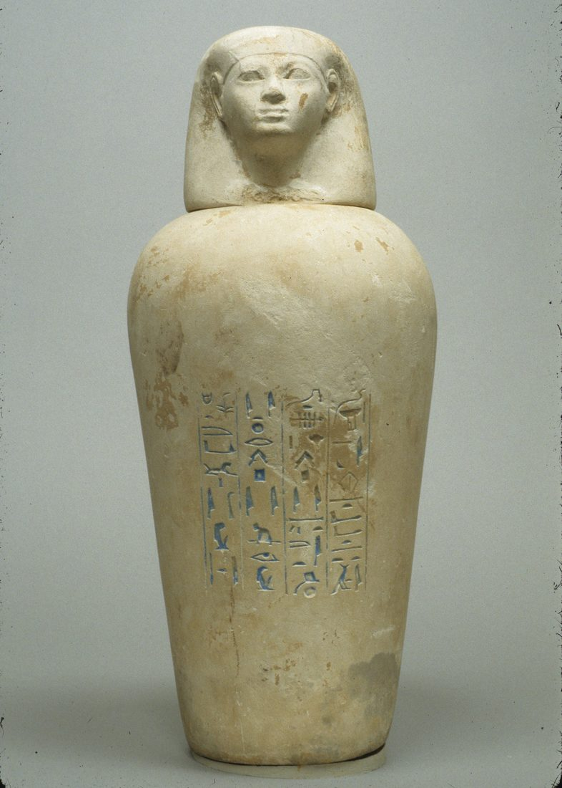
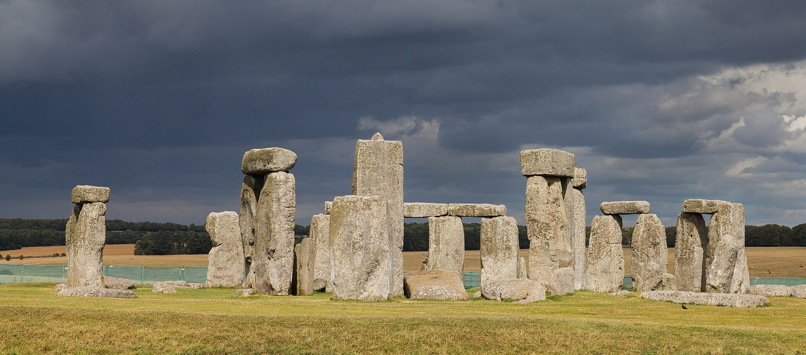

Unit 3 · Human remains · Lesson 1
Human remains as evidence: why study the dead?
What can the bodies of people who died long ago tell us about the past, and how should we treat them?
This unit studies the remains of real people. Its pictures show find-spots, museum displays and objects. Aboriginal Ancestral Remains appear as text only.
Year 11 Ancient History · Present with → or space · Read on a phone with R

Connect · 5 minutes · everyone writes for 90 seconds · press K for the timer
A Unit 1 method that studies a body without cutting it
Name one scientific method from Unit 1 that can study a body without cutting it, and what it can show.
Think of how scientists studied the body of a famous Egyptian king in 2005 without cutting it.
CT scanning: a scanner takes X-ray ‘slices’ through a body without cutting it. It can show bones, injuries and signs of disease, and what lies under wrappings.
DNA analysis and radiocarbon dating are powerful, but each needs a sample of bone, tooth or tissue: something is taken from the body.
The bodies scientists study were people. This unit asks what their remains can tell us, and how they should be treated.
Connect · the next two weeks
This unit’s question
How bodies survive and are found · what science can learn from them · what they show about the lives and times of the people
How the dead should be studied, displayed and owned, and when they should be returned to their descendants
In this unit we use respectful words, choose pictures with care, and show Aboriginal Ancestral Remains as text only. By the end of today, the class will have written its own three respect rules.
Learning intentions and success criteria · 2 minutes
Today’s goals
- understand how human remains can be used as evidence about the past
- recognise why the remains of the dead must be treated with respect
- name four ways human bodies survive from the past, with an example of each
- explain what human remains can and cannot tell historians
- explain why the words we use about human remains matter
Syllabus outcomes: AH-11-05 analyses different types of sources for evidence to support a historical account or argument · AH-11-07 communicates historical understanding, applying historical knowledge, terms and concepts. Life Skills: AH-LS-08 uses sources to form conclusions about the past · AH-LS-11 communicates information about the past using historical terms and concepts.
Note-making · the same routine as Units 1 and 2
How to structure your notes
questions and key terms, written after
short phrases, arrows (→ leads to), abbreviations (c. = about; BCE = before the Common Era)
- 1A new unit, a new pageThe unit’s inquiry question at the top; a cue column about a quarter of the page wide; room for a summary.
- 2Listen and look, then writeDon’t copy while a slide is being explained. Phrases, not sentences; an example for every point.
- 3Write your own notes at each ✎ checkpointThen compare with the model notes, one row at a time. Add what you missed in a second colour.
- 4Write the cue questions afterwardsUse exam verbs: explain, analyse, assess. To revise, cover your notes and answer the cues.
- 5Finish with a three-sentence summaryTwo checkpoints today: how bodies survive · what six cases can tell us.
Key vocabulary · start the unit word wall
Words you will use all unit
| How bodies survive | Meaning |
|---|---|
| Human remains | The bodies, or parts of the bodies, of people who have died — including bones, preserved tissue and ashes. |
| Cremation | Burning the body of a person who has died; the burnt bone and ash that are left are cremated remains. |
| Natural preservation | Preservation by the environment, such as ice, bogs or dry desert sand, without human intervention. |
| Mummification | Preserving a body’s skin and soft tissue: done deliberately in ancient Egypt, and naturally by ice, bogs or desert. |
| Bog body | A human body preserved in a peat bog, often with skin and hair intact. |
| Peat | Partly decayed plant material that builds up in waterlogged, acidic, oxygen-poor bogs. |
| Evidence and respect | Meaning |
|---|---|
| CT scan | Computed tomography: X-ray images taken from many angles to show the inside of a body in 3D without cutting it. |
| Isotope analysis | Measuring chemical traces in bones and teeth to learn about diet and where a person grew up or travelled. |
| Ancient DNA | Genetic material recovered from old remains, used to study ancestry, health and appearance. |
| Mummified person | A person whose body has been preserved, naturally or deliberately; some museums (e.g. National Museums Scotland) now prefer this to ‘mummy’. |
| Ancestral Remains | A respectful term for the remains of Aboriginal and Torres Strait Islander people; Communities may prefer others, such as ‘Ancestors’ or ‘Old People’. |
| Custodian | A person or Community with the Cultural responsibility to care for Country, sites, Knowledge and Ancestors. |
| ICIP | Indigenous Cultural and Intellectual Property — the rights of Aboriginal and Torres Strait Islander Peoples to control their Cultural Knowledge, Practices and Property. |
1 · How bodies survive · I do — an illustrated mini-lecture
Four ways human bodies survive from the past




Which way usually keeps the most evidence about a person, and which keeps the least?
Most: bodies preserved naturally or deliberately, because skin and hair can survive, and in a natural mummy even the organs and a last meal (Egyptian embalmers took out most organs and kept them in jars). Least: cremated remains, because the fire destroys soft tissue and breaks up the bone. But even burnt bone can still be evidence: section 2 shows how.
Images: Wolfgang Sauber (CC BY-SA 3.0) · The Met (CC0 1.0) · Nils Jepsen (CC BY-SA 4.0) · The Met (CC0 1.0). Full details on the last slide.
1 · How bodies survive · I do — think aloud
Natural or deliberate: why does it matter?
Ötzi is a wet mummy that was mummified naturally in the glacier ice. Due to the length of time it lay in the snow and ice, the body dehydrated, i.e. much of the body fluid was lost.
South Tyrol Museum of Archaeology, Bolzano, ‘The mummy’, iceman.it (museum website, checked 2026) · Ötzi died about 3300 BCE and was found in 1991
The body was then treated with natron (a carbonate salt collected from the edges of desert lakes) which acted as a drying agent, absorbing water from the body so as to prevent further decay.
Australian Museum, Sydney, ‘How were ancient Egyptians mummified?’ (museum website, 2023) · describing the method used for royals and high officials, about 1550–664 BCE
What do the two ways of preserving a body have in common?
Both dried the body out. Ötzi lost much of his body fluid in the ice; the embalmers used natron to absorb water “so as to prevent further decay”.
Why does it matter to a historian whether a body was preserved naturally or deliberately?
A deliberate mummification is itself evidence of what people did for their dead, and, with texts, of what they believed. A natural one is an accident of the environment: it says little about customs, but it can keep a person much as they were when they died, with what they had with them (Ötzi’s clothing and equipment).
1 · How bodies survive · I do — think aloud → cold call
What remains can tell us, and what they can’t
- age and sex — teeth, bone growth, the pelvis and skull
- health and injuries — marks on bones; CT scans
- diet — isotopes in bones and teeth; stomach contents
- ancestry — ancient DNA, where it survives
- cause of death — sometimes
- burial customs — how and where the body was laid
- names and feelings
- beliefs — only with burial context or texts
Although we can tell a lot about a person from their bones, determining how they died can be difficult. It can be tempting to see signs of trauma on a skeleton as evidence of a violent death, but most fractures are not fatal.
Natural History Museum, London, ‘Analysing the bones: what can a skeleton tell you?’ (museum website) · trauma = injury
Can a skeleton tell us what the person believed?
Not on its own: bones show a body, not a belief. With burial context (how and where the body was laid, what was buried with it) or with texts, historians can infer beliefs, and they should say how sure they are.
1 · How bodies survive · I do — think aloud → cold call
Why the words we use about the dead matter
Mindful of ethical obligations, the Museum ensures that the human remains held in its care are always treated and displayed with respect and dignity.
British Museum, London, ‘Human remains: Collection and display’ (museum website) · the museum holds over 6,000 human remains
… not an object of curiosity, but a real human who was once alive and had a very specific belief about how her body should be treated after death.
Adam Goldwater, manager of the Great North Museum: Hancock, Newcastle, on Irtyru, a mummified Egyptian woman in its care · statement reported by CNN, 23 January 2023
- 1‘Mummy’ or ‘mummified person’?Some museums now say ‘mummified person’, or use the person’s name. In 2023 the British Museum said it still uses ‘mummy’ in its galleries.
- 2‘Ancestral Remains’ or ‘Ancestors’Respectful terms for the remains of Aboriginal and Torres Strait Islander people; Communities may prefer others.
- 3No horror-film words, no jokesCurses and monsters are films, not history.
Why might a museum say ‘mummified person’ instead of ‘mummy’?
To remind visitors that the remains are a person who once lived, with their own beliefs about their body, not an object or a film monster. Not every museum has changed: in 2023 the British Museum said it still uses ‘mummy’ in its galleries (though its recent displays say ‘mummified remains of …’), and some critics call it elitist to drop a word that is widely understood.
1 · How bodies survive · Writing focus · I do 2 · We do 2 · then apply it in the exit ticket
Writing focus: the same fact, from spoken to academic
Register is how formal your language is for its reader and purpose. History writing sits at the academic end: formal (no ‘I think’, no slang), precise (the exact person, place and date) and respectful (a person, never ‘it’; no horror-film words).
Worked example · written for this lesson · one fact, spoken → academic
1 · Spoken: So this creepy ice mummy guy got found in a glacier in like 1991.
2 · Casual: Ötzi is a really old mummy that they found frozen in the ice.
3 · Closer: Ötzi is a body that was preserved naturally in ice for a very long time.
4 · Academic: Ötzi, a man who died about 3300 BCE, was mummified naturally in glacier ice, which preserved his skin, organs and stomach contents.
Which sentence about Tollund Man is the most formal, precise and respectful? Hold up A, B, C or D.
- AThe creepy bog man, found in a peat bog near Silkeborg in 1950, had a horrible rope around his neck.
- BThe specimen, found in a peat bog near Silkeborg in 1950, had a leather rope lying around its neck.
- CTollund Man, found in a peat bog near Silkeborg in 1950, had a leather rope lying around his neck.
- DTollund Man, found in some bog in Denmark ages ago, basically had this rope thing around his neck.
A uses horror-film words (creepy, horrible). B is precise but calls a person a specimen and ‘it’. D is spoken register and vague (some bog, ages ago, basically).
Write your exit-ticket sentence at the academic end: a person, not ‘it’; the exact evidence (a name, a place, a date); no ‘I think’; no horror-film words.
Keep the same rule for our class respect rules (rule 1: language).
Notes checkpoint 1 of 2
How bodies survive, and what they can tell us
2 · Can tell, can’t tell · We do — card sort in pairs · 6 minutes · press K for the timer
Six cases: what can each tell us, and what can’t it?

1For each card: what can it tell us?2What can it not tell us?3Argued about one? Put it in a ‘tricky’ pile
First match each card to a way the body survived: skeletal · cremated · preserved · mummified.
Images: Wolfgang Sauber (CC BY-SA 3.0) · Diego Delso (CC BY-SA 4.0) · Tigerente (CC BY-SA 4.0) · Nils Jepsen (CC BY-SA 4.0) · The Met (CC0 1.0). Full details on the last slide.
2 · Can tell, can’t tell · We do — check your sort · cold call a pair before each row
Check your sort: the clearer cards
| Card | What it can tell us (examples) | What it can’t tell us on its own |
|---|---|---|
| A · skeleton | age (teeth, bone growth) · sex (pelvis, skull) · health and injuries (marks on bones) · diet and ancestry, if isotopes or DNA survive · a burial custom (a lead coffin) | name · feelings · beliefs · often the cause of death (“most fractures are not fatal”) |
| C · Ötzi | age (about 46) · health · his last meal (fat, wild meat, cereals) · where he grew up (minerals in his teeth) · cause of death (an arrowhead in his left shoulder, found by X-ray in 2001) · ancestry (DNA) | his name · why he was killed · what his tattoos meant to him (the museum thinks they were probably to soothe pain) |
| D · Tollund Man | age (about 40) · height · his last meal (seeds and grain) · diet (isotopes) · cause of death (hanged) · how he was laid in the bog | his name · feelings · why he was hanged: “we shall never know”, says his museum (was it a sacrifice? Lesson 5) |
| E · Egyptian mummified person | age, sex and health (CT scans, without unwrapping) · how the body was mummified · only with texts or burial context (tricky: see the next slide): a name, from the text on a jar or coffin, and beliefs: the Australian Museum says the organs were kept because “they allowed the dead person to breathe and eat in the afterlife” | feelings · the body alone gives no name and no beliefs: they come from texts and the burial |
2 · Can tell, can’t tell · We do — the tricky pile · gesture vote first: thumbs up, sideways or down
The tricky pile: can a cremation still be good evidence?
Cremated human remains from Stonehenge provide direct evidence on the life of those few select individuals buried at this iconic Neolithic monument.
C. Snoeck and nine co-authors, Scientific Reports 8 (2018), abstract · a team of archaeologists and chemists · Neolithic = the New Stone Age
| Card | What it can still tell us | What it can’t tell us |
|---|---|---|
| B · Stonehenge cremations | how many people (at least 25, in bone that excavators dug up in the 1920s and reburied together in 1935) · when (radiocarbon dates on the burnt bone) · adult or young person · sometimes sex (“possible” only) · where some lived in their last years (isotopes: at least 10 had not spent all their last ten or so years on the local chalk) · a burial custom | skin, organs, a last meal · names · feelings · often sex |
| F · Mungo Lady | identified as female · about 40,000 years old · a careful ritual: cremated, crushed, burned again and buried, among the earliest evidence of cremation anywhere | her name · her feelings · what the ritual meant: historians can only infer it, and the Custodians decide what is shared, following ICIP protocols |
| Beliefs, on any card | only with burial context or texts: Egyptian texts and canopic jars; Mungo Lady’s ritual burial; Tollund Man laid in the bog with care | the body alone shows a body, not a belief: any belief is an inference, so say how sure you are |
So: a cremation destroys a lot, but not everything. Burnt bone can still be counted, dated and tested, and the way a cremation was carried out is itself evidence of a burial custom.
3 · These were people · You do · 6 minutes · press K for the timer
Your Cornell notes from the sort
- In the notes column: the six cases, each with what it can tell us and what it can’t.
- Group them: which cases kept the most evidence, and why?
- In the cue column: one question for each case, using an exam verb (explain, analyse, assess).
Use your grid from the sort. Start each row with the way the body survived: skeletal · cremated · preserved · mummified.
Add the cremation question: why can a cremation, which seems to destroy the body, still be significant evidence? Use Mungo Lady.
Notes checkpoint 2 of 2
What six cases can tell us
3 · These were people · You do · 9 minutes · draft in pairs, then agree as a class
Our class respect rules for this unit
With a partner, draft one rule under each heading, and give a reason for it (dignity, consent, Cultural Knowledge). Then the class agrees on three rules for the wall.
What words will we use, and avoid?
An example ruleWe say ‘person’, ‘mummified person’, ‘Ancestral Remains’ or ‘Ancestors’, and we never joke about the dead, because they were people with names and families.
When should we look at pictures of remains?
An example ruleWe use a picture only when it teaches us something, we prefer find-spots, displays and objects, and we never share one for shock, because the dead cannot give consent.
How will we learn about them?
An example ruleWe learn about Aboriginal Ancestral Remains in text only, in the Traditional Owners’ own published words, because the Custodians decide what is shared, following ICIP protocols.
Finish your notes If time · or at home
Summary: three sentences
- How do human bodies survive from the past?
- What can remains tell historians, and what can’t they?
- Why do the words and pictures we use for the dead matter?
Human bodies survive from the past as skeletons, as cremated remains, and as bodies preserved naturally by ice, bogs or desert or deliberately by Egyptian mummification. Remains can reveal a person’s age, sex, health, diet and injuries, and sometimes the cause of death, but on their own they cannot show names or feelings, and beliefs only with burial context or texts. Because these were people, historians use respectful words such as ‘mummified person’ and ‘Ancestral Remains’, choose pictures with care, and leave decisions about Aboriginal Ancestral Remains to their Custodians.
Exit ticket · 7 minutes · before you leave
Finish the sentence
“Human remains are valuable evidence because … but historians must …”
Verb no directive verb: the frame does the work · Topic why human remains are valuable evidence · Limits one sentence; today’s cases · Do because = a reason, with evidence · but = a limit or a responsibility · at the academic end of the register
A precise thing remains can reveal, with an example (Ötzi’s last meal; Tollund Man’s cause of death), and a precise responsibility or limit (respectful words and pictures; the Custodians’ decisions; no names, feelings or beliefs from the body alone).
Human remains are valuable evidence because they can reveal how people lived and died, such as the meal Ötzi ate shortly before he died and the arrowhead in his shoulder, but historians must treat them with respect, because they were people, and must not claim that a body alone shows a name, a feeling or a belief.
Then check yourself against today’s three “I can” statements. Next lesson: preserved by ice and bog: how Ötzi and the bog bodies were found.
Practice and review · 1 of 3 · true, false, justify
True or false? Justify your answer
- 1A cremation destroys every piece of evidence about the person. False — burnt bone can still be counted, dated by radiocarbon and tested: at Stonehenge it showed adults and young people, and that some had not spent all their last years on the local chalk.
- 2Ötzi’s body was preserved deliberately, like an Egyptian mummified person. False — his museum says he was “mummified naturally in the glacier ice”.
- 3A skeleton can show whether a person was male or female. True — mainly from the pelvis and the skull, though it is much harder with burnt bone.
- 4A body on its own can show what the person believed. False — beliefs need burial context or texts, such as Egyptian canopic jars and the texts that explain them.
- 5Every museum has stopped using the word ‘mummy’. False — some museums now say ‘mummified person’, but in 2023 the British Museum said it still uses ‘mummy’ in its galleries.
- 6This unit shows Mungo Lady’s Ancestral Remains in text only. True — the Custodians decide what is shared, following ICIP protocols.
Practice and review · 2 of 3 · writing
Write it as a historian
You wrote the sentence in class. Now write it for one case card: “Tollund Man’s body is valuable evidence because …, but …”
Tollund Man’s body is valuable evidence because the bog preserved his skin, hair and stomach contents, which show his last meal and that he was hanged, but it cannot tell us his name or why he was killed, which his own museum says “we shall never know”.
Rewrite this sentence at the academic end of the register: formal, precise and respectful. “The Stonehenge cremation stuff is kind of useless, because it’s basically just burnt bits.”
The cremated remains from Stonehenge are still valuable evidence, because burnt bone from at least 25 people can be counted, dated and tested.
Explain why a cremation, which seems to destroy the body, can still be significant evidence. Use Mungo Lady (text only) and the Stonehenge cremations.
A cremation seems to destroy the evidence, because the fire burns away skin and organs and breaks the bones into fragments. Yet burnt bone can still answer important questions. At Stonehenge, burnt bone that excavators had dug up in the 1920s and reburied together came from at least 25 people, radiocarbon dates placed them between about 3200 and 2400 BCE, and isotopes suggested that at least 10 had not spent all their last years on the local chalk. The way a cremation was carried out is evidence too: Mungo Lady was cremated, her bones crushed, burned again and buried about 40,000 years ago, among the earliest evidence of cremation anywhere. A cremation can therefore be significant evidence, although the remains cannot tell historians what her burial meant, and the Custodians decide what is shared, following ICIP protocols.
Practice and review · 3 of 3 · cover your notes and answer from memory
Quick checks
- Name four ways human bodies survive from the past, with an example of each. Skeletons (a Roman burial at Wels); cremated remains (Stonehenge; Mungo Lady); bodies preserved naturally by ice, bogs or desert (Ötzi; Tollund Man); bodies preserved deliberately (Egyptian mummification).
- What is the difference between natural and deliberate preservation? Natural preservation is done by the environment with no human help; deliberate preservation is people treating the body to stop decay, which is itself evidence of their customs.
- Name four things remains can reveal. Any four: age, sex, health, diet, injuries, ancestry, burial customs, and sometimes the cause of death.
- What can remains not show on their own? Names and feelings; beliefs only with burial context or texts.
- What can a cremation still reveal? How many people, when (radiocarbon on the burnt bone), adult or young person, sometimes sex, where some lived late in life (isotopes), and the burial ritual itself.
- Why do some museums say ‘mummified person’ instead of ‘mummy’? To remind visitors that the remains were a person who once lived; not all agree (in 2023 the British Museum said it still uses ‘mummy’).
Sources and credits
Where everything comes from
Museums: South Tyrol Museum of Archaeology, ‘The mummy’ and ‘The discovery’; Museum Silkeborg, ‘Tollund Man and Elling Woman’; Australian Museum, ‘How were ancient Egyptians mummified?’ (2023); Natural History Museum, London, ‘Analysing the bones: what can a skeleton tell you?’; British Museum, ‘Human remains: Collection and display’; National Museum of Australia, ‘Mungo Lady’ and A Repatriation Handbook, glossary; The Metropolitan Museum of Art, records 18.8.5a, b and 91.1.1230. All quoted briefly for teaching.
News: Issy Ronald, CNN, Don’t say ‘mummy’: Why museums are rebranding ancient Egyptian remains (23 January 2023), quoted from the ABC7 Chicago reprint (25 January 2023); Museums Association, Debate over use of the term ‘mummy’ in UK museums (24 January 2023).
Studies: C. Snoeck et al., Scientific Reports 8 (2018), open access (CC BY 4.0); N. H. Nielsen et al., Radiocarbon 60 (2018); F. Maixner et al., Current Biology 28 (2018); K. Wang et al., Cell Genomics 3 (2023); F. Zhang et al., Nature 599 (2021), open access (CC BY 4.0); J. M. Bowler et al., Nature 421 (2003). Aboriginal Advisory Group: NSW Environment, Willandra Lakes Region World Heritage Aboriginal Advisory Group.
Outcomes and content: NSW Education Standards Authority (NESA), Ancient History 11–12 Syllabus (2024). © NESA.
Human Remains as Historical Evidence (worksheet, class notebook), used for the types of remains and the conditions that preserve them.
- Stone marker near Ötzi’s find-spot, Tisenjoch · Photo: Tigerente · CC BY-SA 4.0 · source
- Skeleton in a Roman lead coffin, Wels · Photo: Wolfgang Sauber · CC BY-SA 3.0 · source
- Roman glass cinerary urn (Met 91.1.1230) · The Metropolitan Museum of Art (Open Access) · CC0 1.0 · source
- Bjældskovdal bog, where Tollund Man was found · Photo: Nils Jepsen · CC BY-SA 4.0 · source
- Canopic jar of Maruta (Met 18.8.5a, b) · The Metropolitan Museum of Art (Open Access) · CC0 1.0 · source
- Stonehenge, Wiltshire · Photo: Diego Delso · CC BY-SA 4.0 · source


All images are public domain or openly licensed, and were resized for the web (the urn and the Wels burial were also cropped). Each is shared under the licence shown. Out of respect, there are no images of Aboriginal Ancestral Remains or burial places.